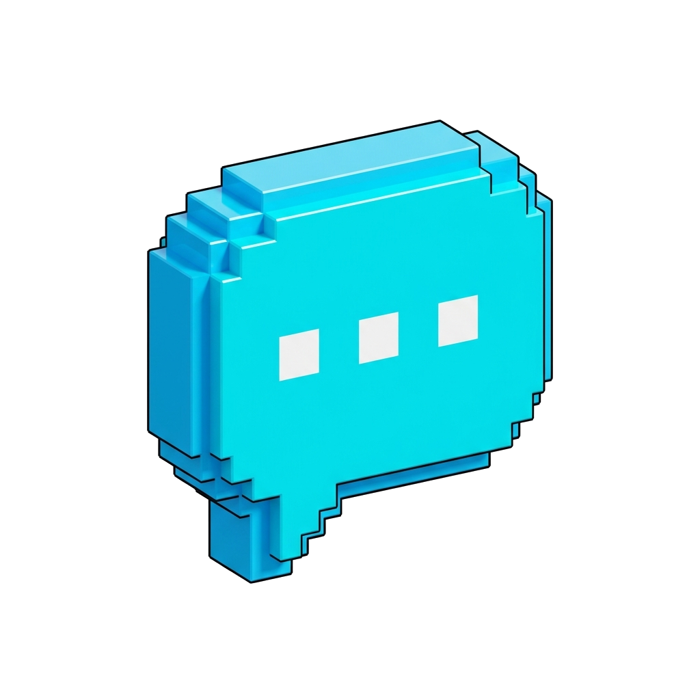
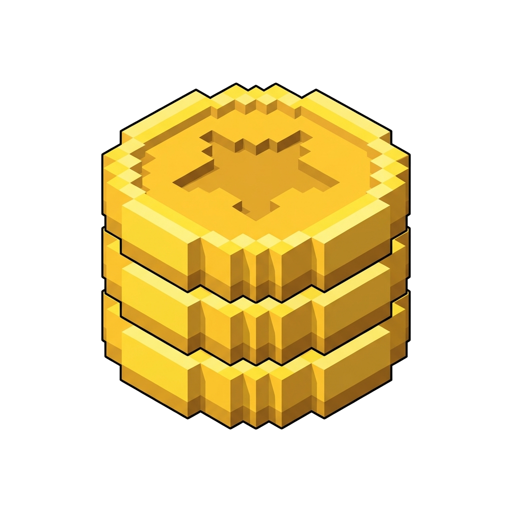
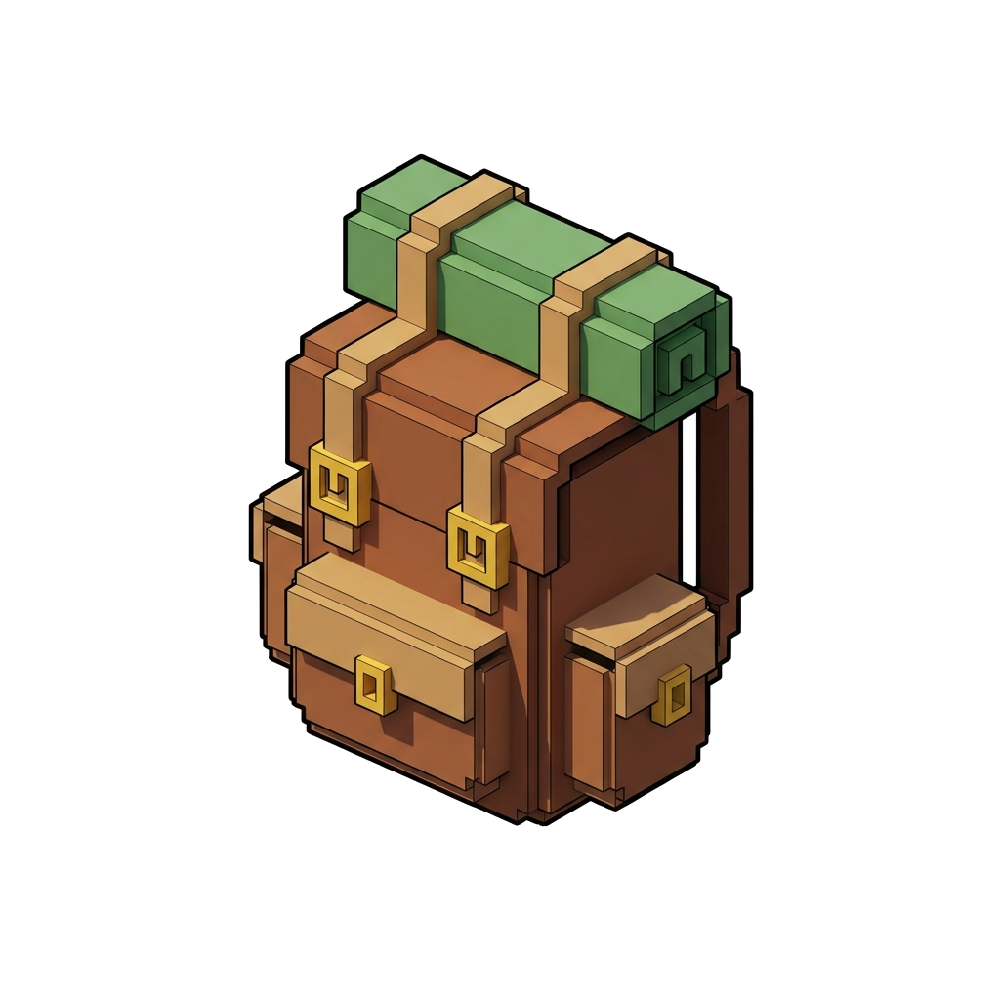
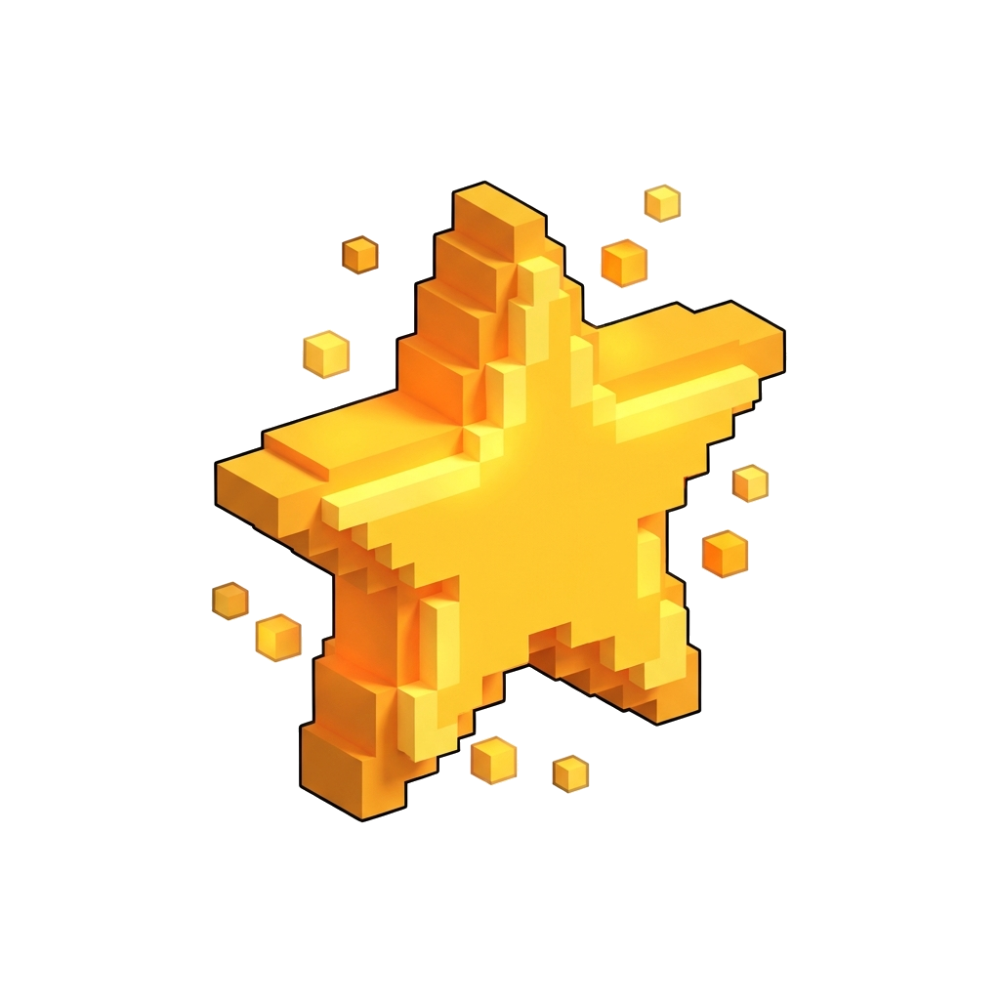
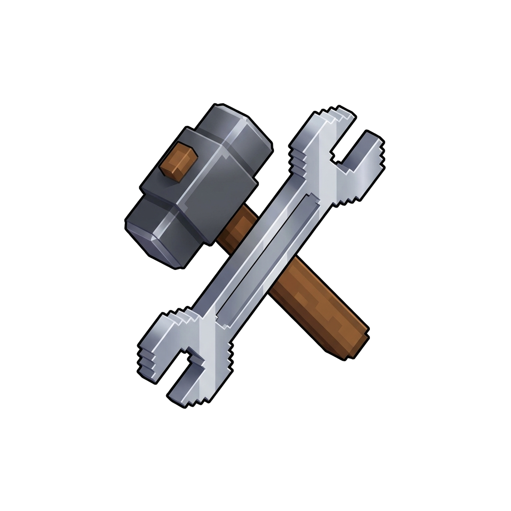
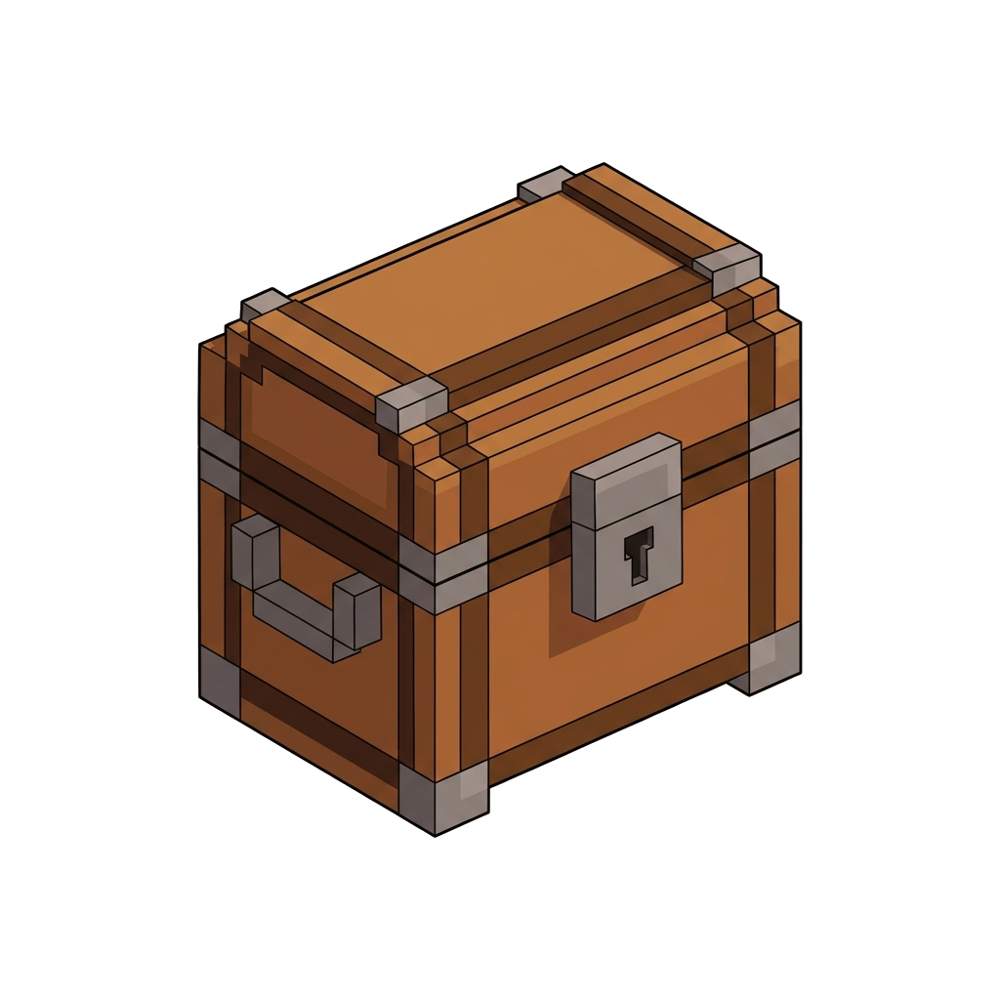
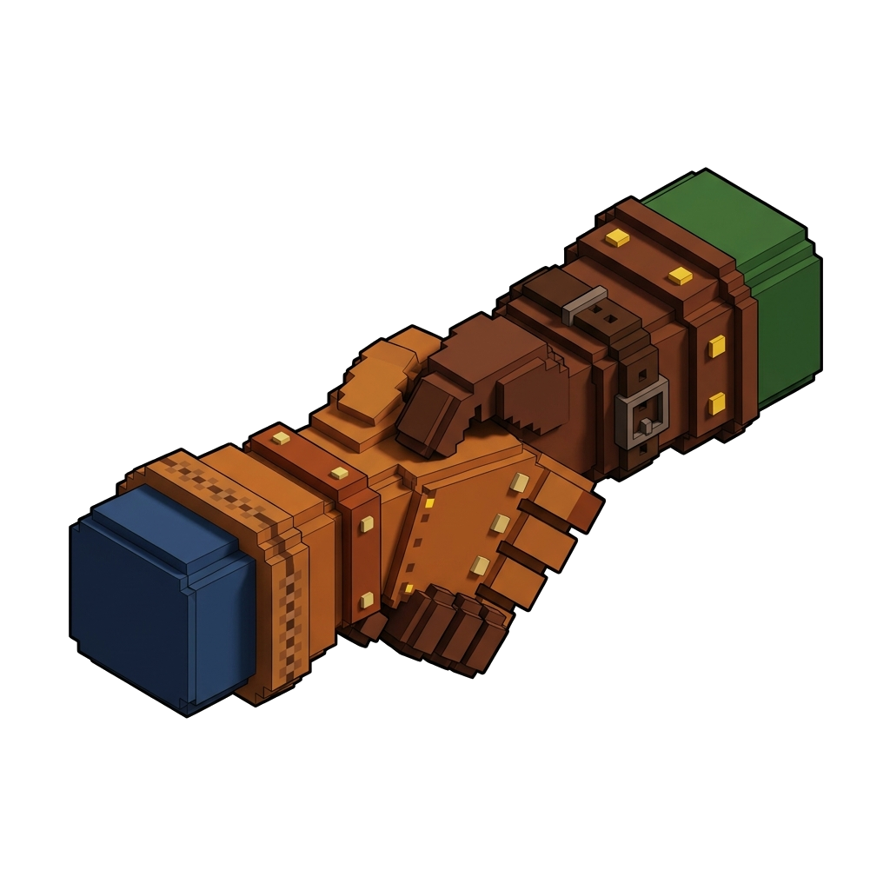

Smelter Industri
Smelter Industri
Lebur 2 Bijih Ore menjadi 1 Batang Ingot (durasi 5s). Gunakan 🖤 Batu Bara sebagai bahan bakar (bertahan 60s).


0
TasKlik item lalu klik slot lain untuk memindahkan. Tekan F untuk makan item hotbar terpilih.

Skill Tree
Crafting
Peti PenyimpananKlik item di peti untuk mengambilnya, klik item di tasmu untuk menitipkannya. Isi peti tetap tersimpan walau kamu keluar dari permainan.

Rekan Tim